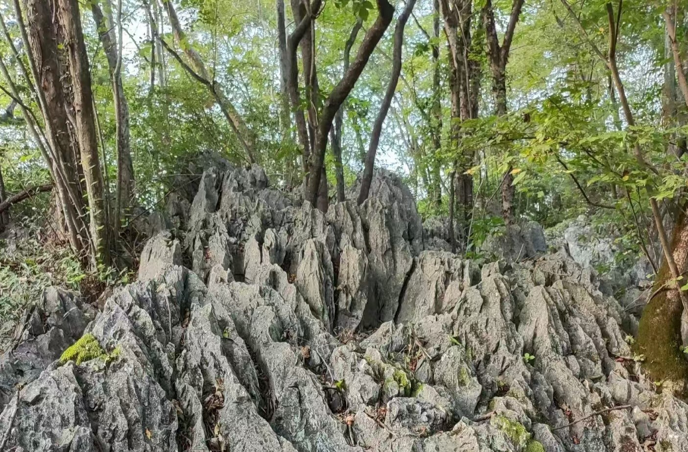
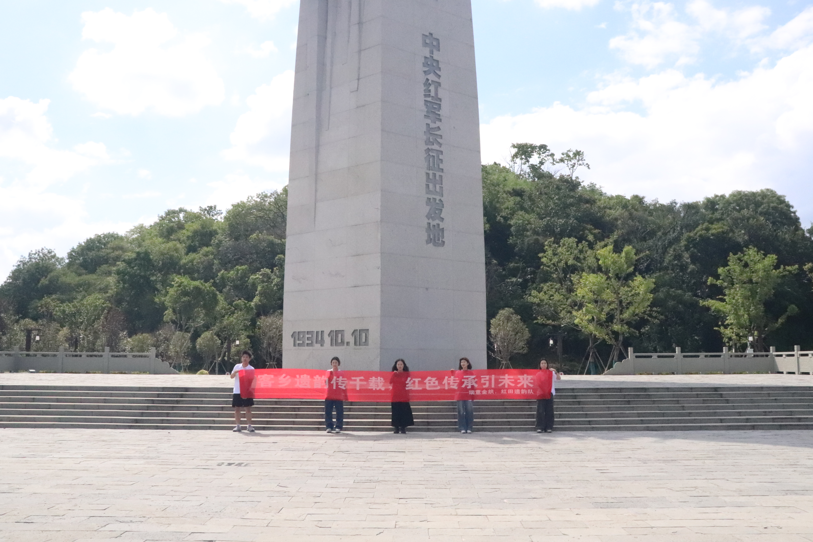
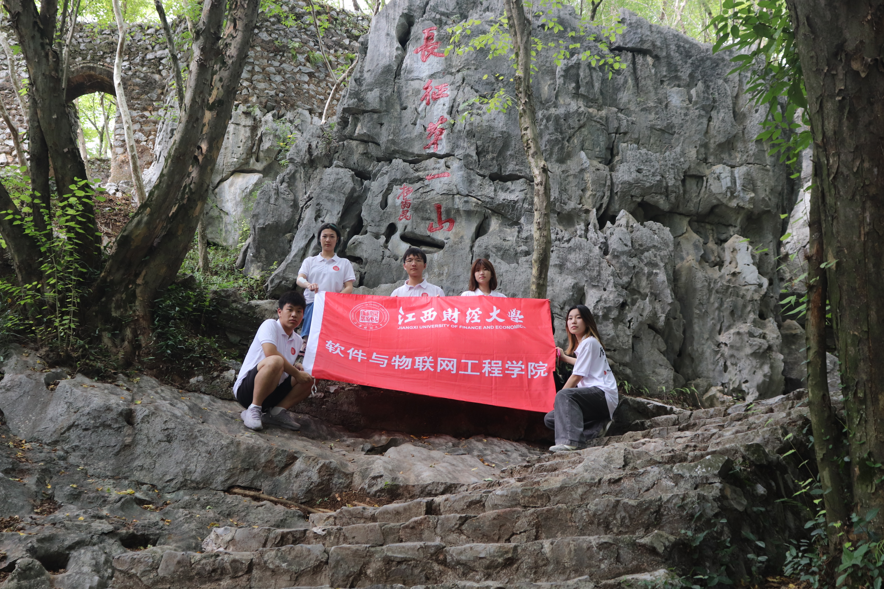
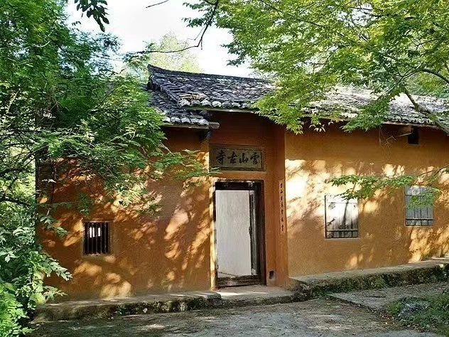
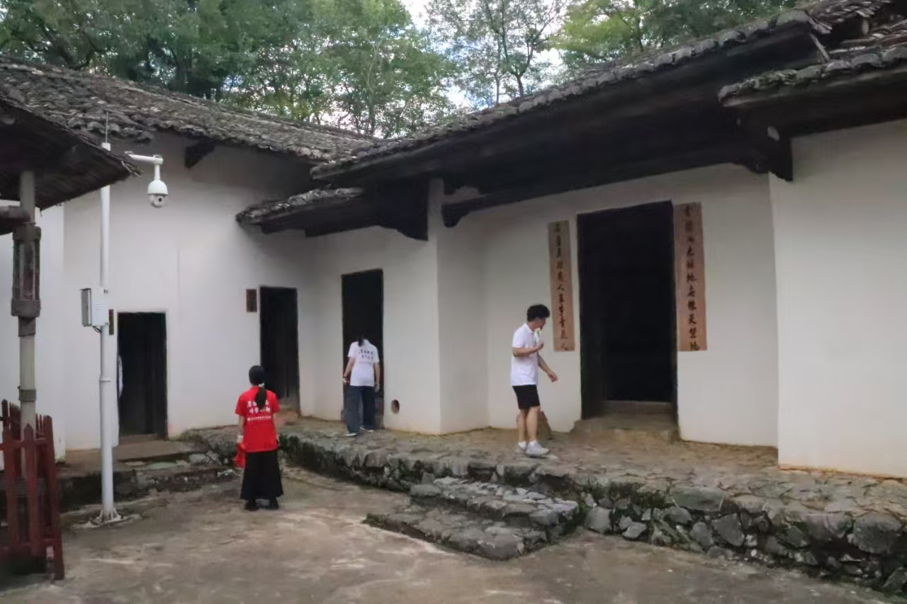
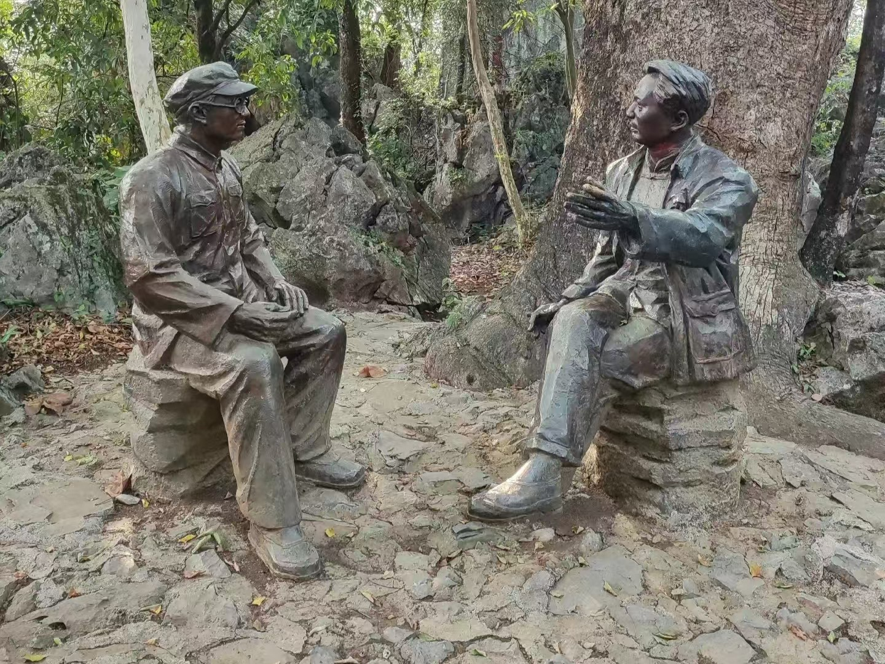

<!DOCTYPE html>
<html>
	<head>
		<meta charset="utf-8">
		<title></title>
	</head>
	<body>
	</body>
</html><!DOCTYPE html>
<html lang="zh-CN">
<head>
    <meta charset="UTF-8">
    <meta name="viewport" content="width=device-width, initial-scale=1.0">
    <title>云石山</title>
	<style>
		* {
			margin: 0;
			padding: 0;
		}
		#container {
			margin: 0 auto;
			width: 100%;
			height: 5500px;
		}
		
		#firstimg {
			margin: 0 auto;
			width: 1700px;
			height: 700px;
			background-color: green;
			z-index: 1;
		}
		
		#container2 {
			position: relative;
			margin: 0 auto;
			width: 1200px;
			height: 4500px;
			background-color: white;
			top: -100px;
			z-index: 10;
			padding: 50px;
			
		}
		
		#container2 h1 {
			text-align: center;
			margin-bottom: 30px;
			font-size: 40px;
		}
		
		#container2 p {
			text-align: center;
			margin: 50px 100px 0px;
			font-size: 20px;
			letter-spacing: 3px;
			line-height: 130%;
		}
		
		#container2 h2 {
			margin: 40px 100px 0px;
		}
		
		#container2 h3 {
			margin: 20px 100px 0px;
			font-size: 20px;
			text-indent: 1em;
		}
		
		.pic-first {
			width: 800px;
			height: 500px;
			margin: 0 auto;
			background-color: aqua;
			margin-top: 20px;
		}
		
		.pic-first img {
			width: 100%;
			height: 100%;
			margin-bottom: 100px;
		}
	</style>
</head>
<body>
    <div id="container">
    	<div id="firstimg">
    		
    	</div>
    	<div id="container2" style="box-shadow: 10px 10px 10px rgba(0, 0, 0, 0.5);">
    		<h1 >云石山</h1><hr />
				<p >怪石嶙峋，古树参天，这里是长征第一山——云石山。1934年7月至10月，中华苏维埃共和国临时中央政府迁移至此。将此作为中华苏维埃共和国临时中央政府、中央军事委员会、中共中央局等中央机关各部委的驻扎地。云石山是中央机关二万五千里长征的出发地，为长征的胜利奠定了坚实基础，具有重要的历史地位。</p>
				<div class="pic-first" style="height: 550px;"></div>
    			<p>云石山脚远眺，远远可见革命纪念碑高耸入云，气势磅礴。<br />
				高校红色走读实践团在革命纪念碑下合影</p>
				<div class="pic-first" style="height: 550px;"></div>
    			<p>云石山四面陡峭，只有一条百余阶的石板小道弯曲通行。小道一旁，时任国家主席、中央军委副主席杨尚昆同志用红色烫金大字在崖壁上镌刻下“长征第一山”五个大字。</p>
				<div class="pic-first" style="height: 550px;"></div>
    			<p>在云石山的怀抱中，隐藏着一处具有重要历史意义的地方,乃是一座建于清嘉庆年间（1796年）的寺庙，名为“云山古寺”，为客家建筑风格，是一个黄墙青瓦房子的院落，门楣上匾额“雲山古寺”，门口对联“云山日永常如画，古寺林深不老春”。</p>
				<div class="pic-first"></div>
    			<p>这座寺庙后来又有了一个新的称谓，叫做中华苏维埃共和国临时中央政府旧址。1934年7月，正值中央革命根据地第五次反“围剿”斗争最为激烈的时刻，原驻在沙洲坝的中央机关为安全起见，决定迁移到较为隐蔽的云石山。而云石山上的云山古寺也就成为了当时中共中央的所在地。</p>
				<div class="pic-first" style="height: 550px;"></div>
				<p>当年在云山古寺这里居住和办公的有中央执行委员会主席毛泽东与妻子贺子珍、中央人民委员会主席张闻天以及部分工作人员。<br />
				毛泽东、张闻天促膝长谈</p>
				<div class="pic-first"></div>
				<p>岁月悠悠，云石山依然屹立于此，它用缄默诉说着往昔的峥嵘岁月，用坚韧传承着伟大的长征精神。每一块石，每一棵树，都是历史的见证者，向人们讲述着那段可歌可泣的光辉岁月，提醒后辈铭记先辈的牺牲与奉献，珍惜来之不易的和平与繁荣。如今，五湖四海的红色拾忆者重走长征路，回首来时路，眺望未来路，心中涌起的是对历史的缅怀，更是对未来的担当。</p>
    	</div>
    </div>
</body>
</html>